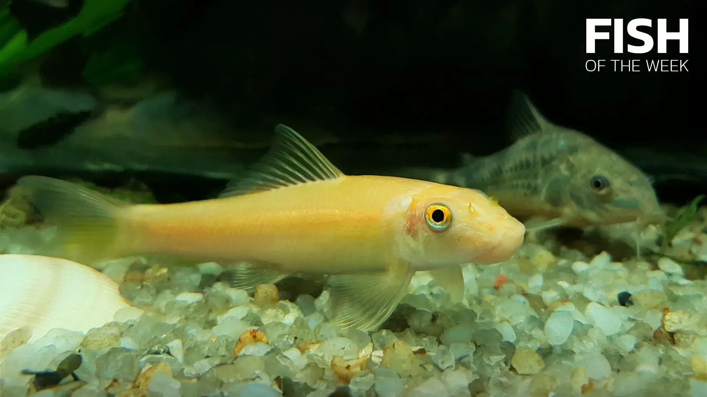

O nas
Nasza strona to miejsce stworzone z pasji do ryb i akwarystyki. Znajdziesz tu informacje o różnych gatunkach ryb, ich środowisku naturalnym oraz wskazówki dotyczące pielęgnacji akwarium.
Popularne Gatunki

Karp
Karp to ryba słodkowodna o dużym znaczeniu gospodarczym.

Łosoś
Łosoś to ryba wędrowna, ceniona za swoje walory smakowe.

Dorsz
Dorsz jest popularną rybą morską wykorzystywaną w kuchni na całym świecie.

Neon Innesa
Popularna ryba akwariowa znana z charakterystycznego niebieskiego paska.

Gupik
Kolorowa ryba idealna dla początkujących akwarystów.

Bojownik wspaniały
Znany z pięknych, długich płetw i intensywnych kolorów.

Molinezja
Spokojna ryba idealna do większych akwariów społecznych.

Brzanka Sumatrzańska
Aktywna ryba ławicowa o charakterystycznych paskach.

Glonojad
Pomocny czyściciel akwarium, żywiący się glonami i resztkami pokarmu.